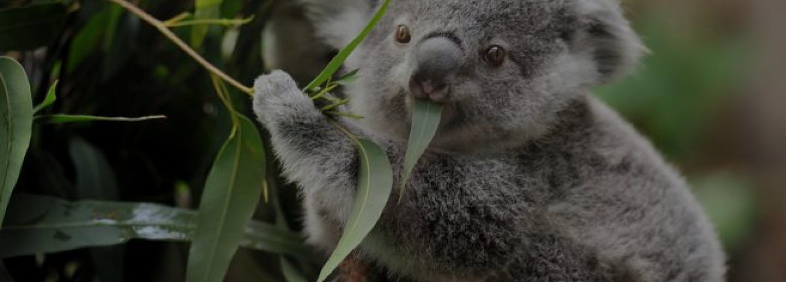

ORIGINE: ANIMALE TERRESTRE
KOALA
Il Koala è un mammifero terrestre che vive nelle foreste con prevalenza di eucalipto del continente autraliano.
PERCHÈ È IN VIA DI ESTINZIONE?
Il koala è un animale minacciato dal cambiamento climatico, soprattutto l'aumento del riscaldamento che porta a vari incendi e alla siccità. Questa siccità porta i koala a scendere dal proprio albero per trovare altre fonti di acqua e portandoli a molti più pericoli.
- Dimensioni: è di piccole dimensioni, raggiunge i 15 kg e 60/80 cm di altezza.
- Vita media: 13/18 anni.
- Colore: manto griglio,ha delle zampe con dita prensili che l'aiutano ad arrampicarsi sugli alberi più scure.
- Alimentazione: foglie di eucalipto e da esse ne traggono anche l'acqua.
- Stile di vita: è un animale estremamente solitario, e si muove molto lentamente vivendo una vita sedentaria.
- Curiosità: nutre i suoi piccoli attraverso le proprie feci.